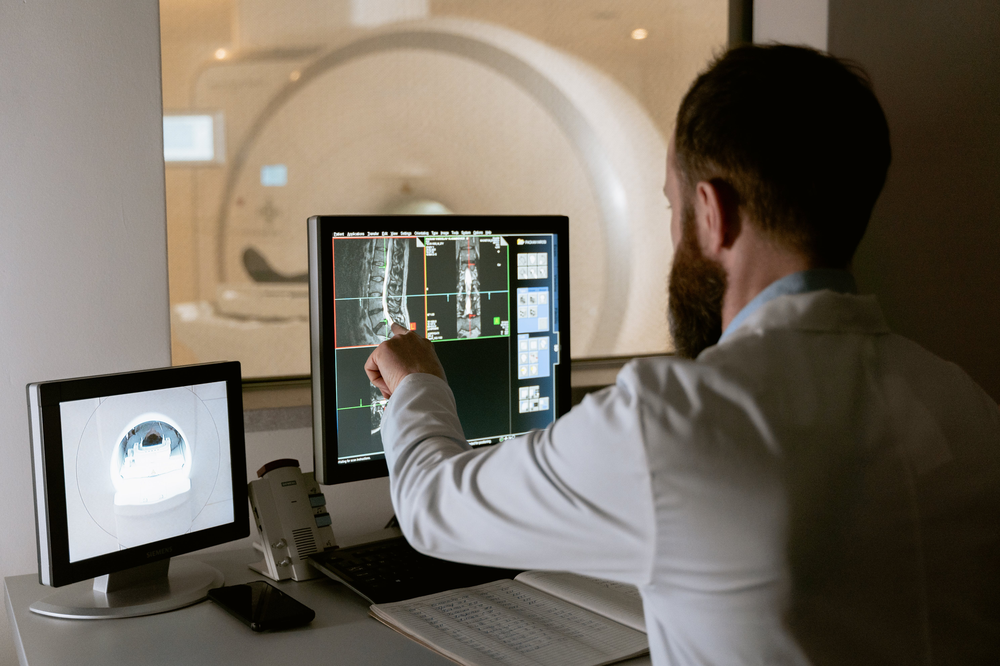
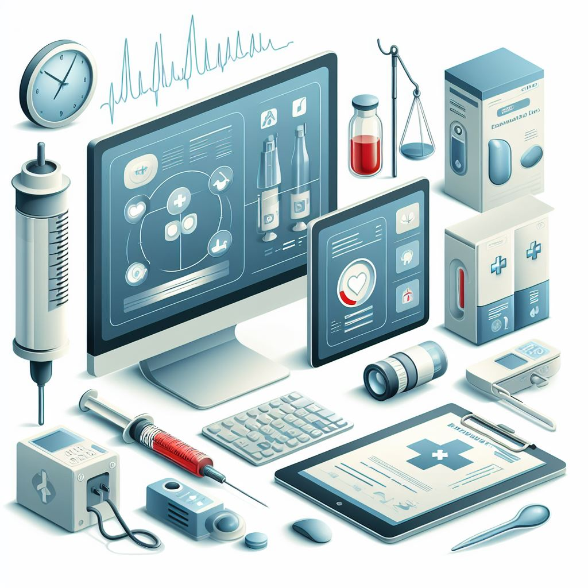

A manutenção preventiva e corretiva são dois tipos de manutenção utilizados para garantir o bom funcionamento de instrumentos de medição.
A manutenção preventiva envolve a revisão regular do instrumento para garantir sua eficiência e evitar problemas futuros, economizando dinheiro a longo prazo.
Por outro lado, a manutenção corretiva é realizada somente quando o instrumento apresenta problemas graves, resultando em custos mais elevados e, em alguns casos, a substituição do instrumento.
Priorizar a manutenção preventiva é fundamental para manter a qualidade do trabalho, garantir a segurança dos trabalhadores e economizar recursos. Portanto, é importante entender a diferença entre esses dois tipos de manutenção e realizar a manutenção preventiva regularmente para evitar a manutenção corretiva dispendiosa.
A manutenção é fundamental para garantir o funcionamento confiável dos equipamentos médicos críticos, como ressonância magnética e monitores cardíacos, em hospitais modernos
Saiba MaisEquipamentos médicos confiáveis são essenciais em hospitais modernos, desempenhando um papel crítico no diagnóstico e tratamento de pacientes, desde ressonância magnética a monitores cardíacos.
Saiba MaisNesta série de posts, exploraremos o papel essencial dos profissionais de manutenção de equipamentos biomédicos.
Saiba MaisIdeal para entusiastas de eletricidade, engenheiros elétricos e profissionais preocupados com segurança elétrica em diversos contextos, incluindo manutenção de equipamentos biomédicos.
Acesso Gratuito ▶Perfeito para entusiastas da eletrônica, estudantes de engenharia elétrica e profissionais que buscam aprimorar suas habilidades em soldagem de placas de circuito impresso. Inscreva-se agora para adquirir conhecimentos práticos essenciais nesse campo fundamental da eletrônica.
Acesso Gratuito ▶O Instituto Federal do Sudeste de Minas Gerais (IF Sudeste MG) é uma instituição pública e gratuita que enfatiza ao máximo tudo aquilo que possa tornar a sociedade mais justa, qualificada e participativa.
Neste projeto temos como missão promover cursos e treinamentos destinados ao aperfeiçoamento e atualização de trabalhadores da área técnica para o desenvolvimento de aptidões para a vida profissional na gestão da manutenção de equipamentos em ambiente hospitalar.
Aprimorar o desempenho profissional a partir da ampliação e desenvolvimento de conhecimentos teórico-práticos em determinadas habilitações ou área profissional. Instalação de equipamentos com segurança elétrica e também na gestão da manutenção de equipamentos em ambientes hospitalares, clínicas e unidades básicas de saúde.
Apresentar aos profissionais da área de Eletrotécnica, Eletromecânica, Eletrônica conhecimentos técnico-científicos, sobre questões mais atuais da sua área de atuação em. instalação, manutenção e calibração de equipamentos.
EQUIPACARE, empresa de Engenharia Clínica e Hospitalar, que acredita no constante aprendizado e na procura das melhores práticas para qualidade e eficiência nos serviços prestados. Tem como missão proporcionar economia, facilidade e tranquilidade aos gestores do setor de saúde, fornecendo consultoria e serviços de engenharia para a implantação e gestão da equipagem hospitalar.

Adriana Scheffer Quintela
Álisson Alves Almeida
Claudio R. B. S. Rodrigues
Emerson Augusto P. Moraes
Felipe Gomes Duque
Isabela M. de Mendonça
Leandro Matos Riani
Leila Silvia da Silva
Ricardo Costa P. e Santos
Wagner Dias Rocha
Felipe Médice Chinelate

Gabriel Delgado Rodrigues
Gabriel F. Fernandes
José Alberto Bordonal
Leonardo C. C. Rodrigues
Lourenço D. A. de Souza
Luiz Eduardo A. de Oliveira
Nicollas V. B. Passos
Pâmela Teixeira da Silva
Tiago Simões R. Barbosa
Wallysson Rodigues Felipe